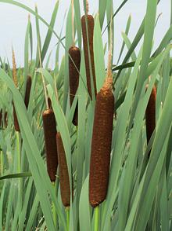
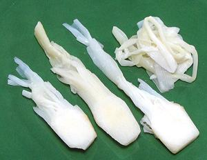

Cattails

[Typha latifolia (Common Cattail, Broadleaf Cattail) |
Typha angustifolia (Narrowleaf Cattail) |
other species of genus Typha in family Typhaceae]
Cattails are a dominant feature of many wetland environments worldwide,
and can be very difficult to control invasives. T. latifolia,
the most widespread species, is considered a troublesome invasive in
Hawaii and Australia. T. orientalis is native to all of Australia
and New Zealand.
Cattail flowers are two part: a male spike at the
top, and a sausage shaped female flowerhead below it. The female
flowerhead matures, then bursts into many thousands of wind-born seeds.
The two most widespread species can easily be told apart if flowering.
T. angustifolia has a space between the male and female spikes,
while T. latifolia has no space.
Photo of T. latifolia by AnRo0002 distributed under license
Creative Commons
CC0 1.0 Universal Public Domain Dedication.
All parts of cattail plants are edible during one or more stages of
maturity.
More on Poales.
Cattail Stems & Leaf Bases

[Bon bon (Viet); "Cossack Asparagus"]
Stems and leaf bases are edible, prepared in various ways. The Russian
Cossacks have long eaten them raw or boiled. While called "Cossack
Asparagus", the flavor has been reported more like cucumber. The
photo specimens, "Bon Bon Chua Ngot" (probably T. angustifolia),
were pickled, a product of Vietnam. They were mild and lightly crunchy.
Ingred: cattail, water, sugar, salt, vinegar, chili, preservative (E202
(potassium sorbate)).
Cattail Rhizomes
These have been eaten in Europe for at least 30,000 years. They
are very nutritious with a protein content similar to corn or rice.
They are often dried and ground into flour, but can be cooked similarly
to potatoes.
Cattail Flower Spikes
Pollen from the male spikes is used as a flour enhancer and thickener,
and in the marshes of southern Iraq in a dessert called Khirret
(T. domingensis). In Chile, immature female flower spikes have
long been battered and cooked on the stem, often called "Wild Corn Dogs"
(T. angustifolia). Immature female spikes have been used in many
other ways in other cultures.
Health & Nutrition:
Rhizomes of
Cattail should not be eaten if they are grown in poluted water, as
they can concentrate lead, arsenic and pesticide residus. One species,
Typha domingensis, found worldwide in temperate and tropical
climates, has been found extremely efficient (to 98%) at removing
disease causing enterobacteria (from animal intestines) from
agricultural water.
ty_cattailz 190505 - www.clovegarden.com
©Andrew Grygus - agryg@clovegarden.com - Photos
on this page not otherwise credited © cg1
- Linking to and non-commercial use of this page permitted